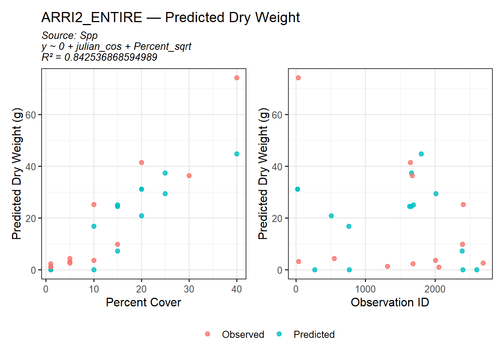
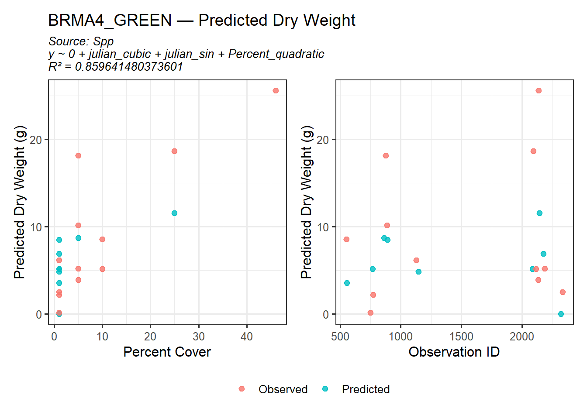
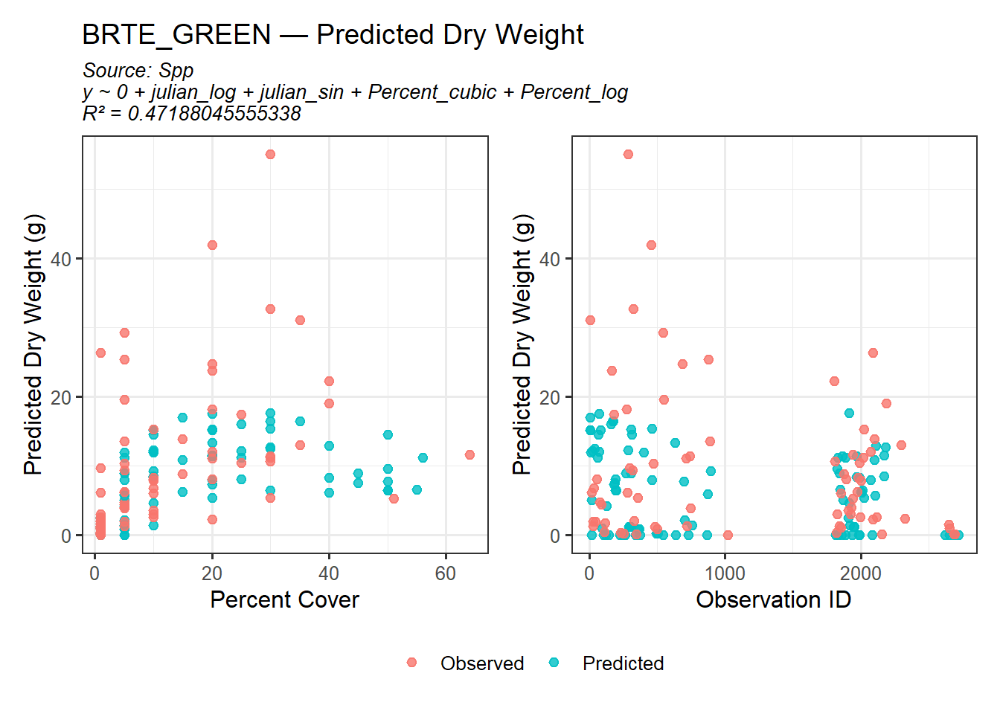
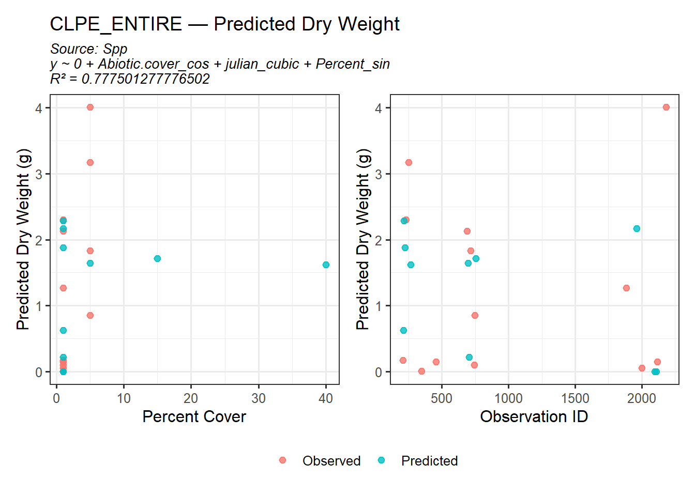
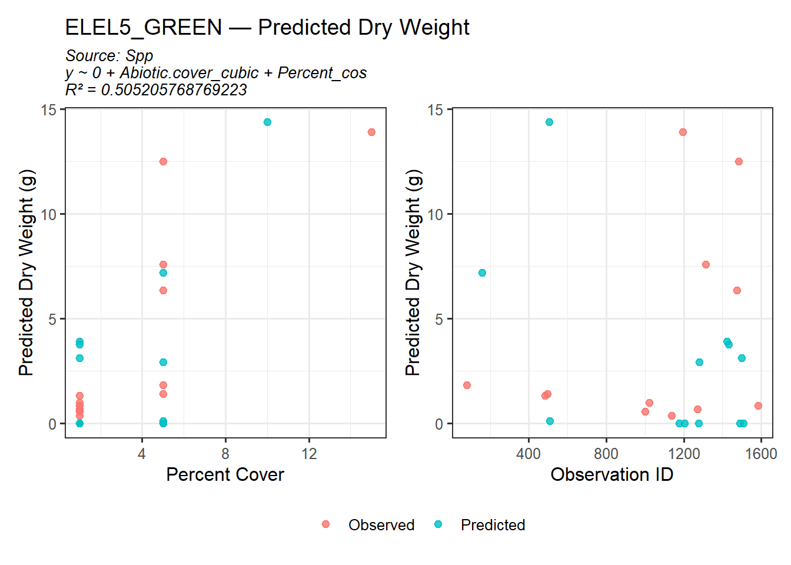
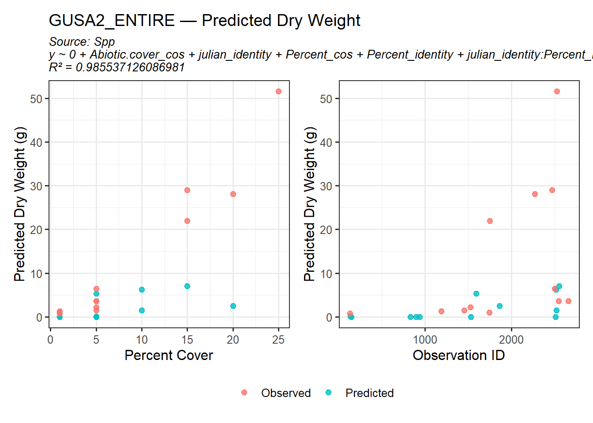
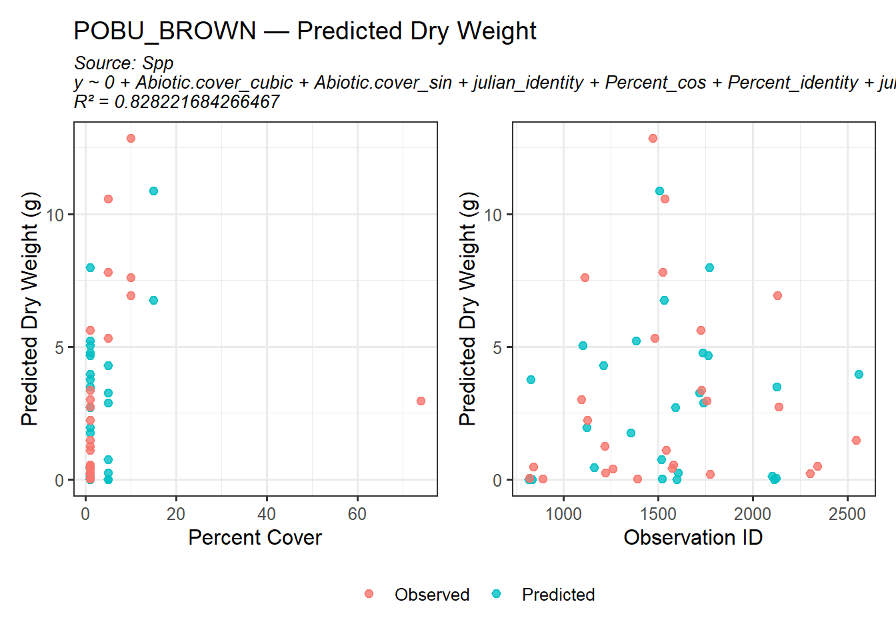
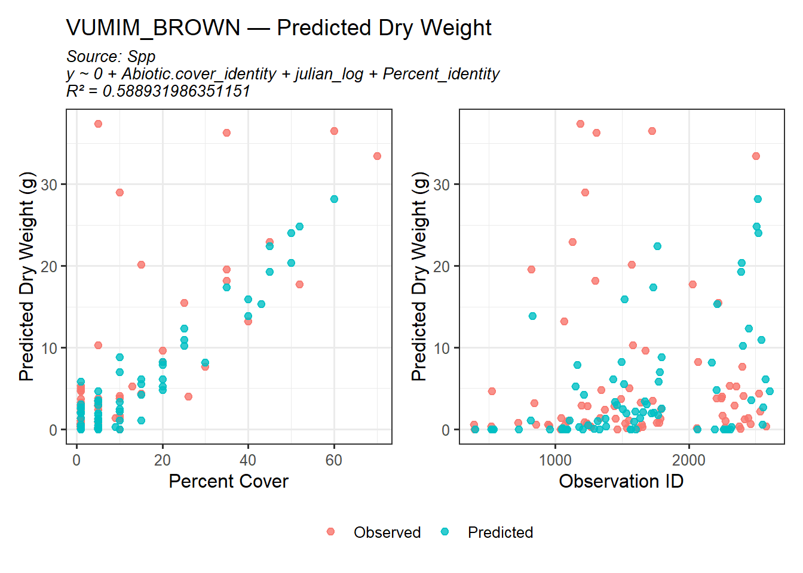
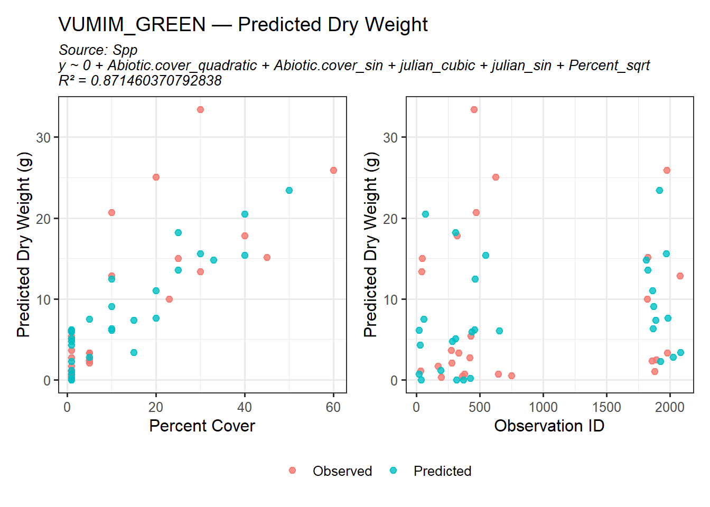
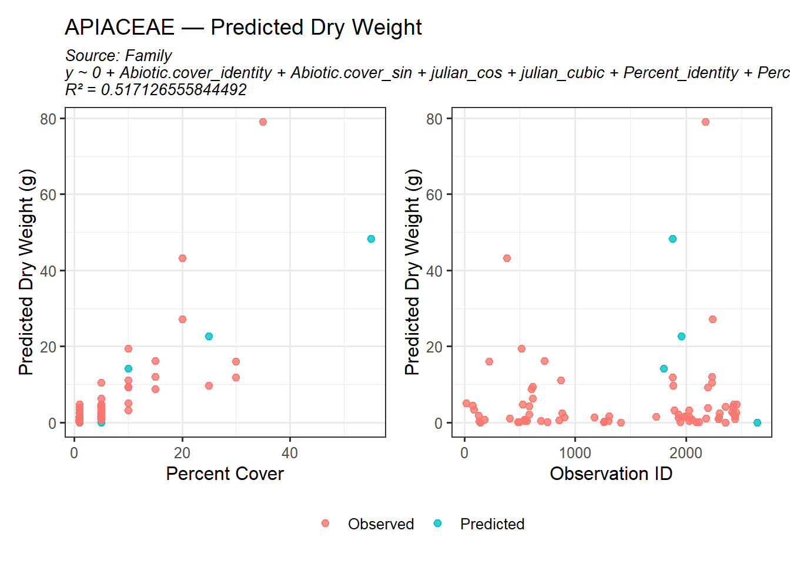

Here are the updated R-squared and AIC values of the new regression equations that include an interaction term between various transformations of Julian Day and Percent cover. Ryan helped me code the interaction term into the dredging model, so every combination should have been considered. I currently have it displaying the top three models for each species, genus etc because the highest R-squared value did not necessarily always equal the lowest AIC. I wanted to keep them just as a comparison. To actually run the predictions, I used whichever equation had the best R-squared value.
A lot of the species level regressions look pretty good and I believe are the main source of prediction. There are still a few that do not meet the R-squared cutoff of 0.6. As you move up through the hierarchy of regression equations they progressively get worse. I am not sure what to do next to improve them. Or if it is worth working to improve them rather than just resulting in using the functional group like Katey did. However, most of the functional group regression equations currently have the worst R-squared values. Ryan Martin suggested potentially recategorizing my functional groups to reflect the size of the plants observed (e.g. short forb vs tall forb instead of annual vs perennial)
After including the interaction term between Julian Day and Percent cover in my linear regression models, here are the new predicted biomass outputs. I included a column that references which regression equation was used to predict the biomass. If the none of the regressions were above an R-squared value of 0.6 I had it fall back to use which ever equation had the highest value (typically the species regression). Relatively they are starting to look better, but there are still a lot of predicted zeros. The end of this documents includes scatterplots to better compare the predicted vs observed biomass values for each species.
These predictions do not include any of the species that were observed as 1% of cover in >80% of the quadrats that the species was observed. I removed those to both create the linear regression equations as well as before predicting biomass for the remaining species. I followed Katey’s procedure and predicted the biomass for those 1% species by taking the mean of the measured biomass values and upscaling it when needed.
Sorry in advance for the extensive amounts of scatterplots below. I plotted the biomass measurement based on observation ID as well as Percent cover in order to compare the predicted vs observed biomass values. The plot with the observation ID is meant more to flag any points that I may need to remove in order to help the predictions.
Species
Code
library(ggplot2)library(dplyr)library(purrr)library(glue)library(patchwork)spp_pred_species <- predictions %>%filter(pred_source =="Spp") %>%pull(Spp) %>%unique()# 2. Keep Spp predictions and matching Observed rowsspp_predictions_filtered <- predictions %>%filter( pred_source =="Spp"| (pred_source =="Observed"& Spp %in% spp_pred_species) )%>%arrange(Spp)plot_species_predictions <-function(species_name, predictions, save_plots =FALSE) {# Filter for this species dat <- predictions %>%filter(Spp == species_name)# Prepare annotation text formula_text <-unique(dat$Formula[dat$source_group =="Predicted"]) r2_text <-unique(dat$R2[dat$source_group =="Predicted"]) pred_source_text <-unique(dat$pred_source[dat$source_group =="Predicted"]) annotation_text <-if (length(formula_text) >0) {glue("Source: {pred_source_text}\n{formula_text}\nR² = {r2_text}") } else {"" }# Base theme base_theme <-theme_bw(base_size =12) +theme(legend.title =element_blank(),plot.subtitle =element_text(size =10, face ="italic") )# Plot 1: pred_DryWeight vs Percent p1 <-ggplot(dat, aes(x = Percent, y = pred_DryWeight, color = source_group)) +geom_point(size =2, alpha =0.8) +labs(title =glue("{species_name} — Predicted Dry Weight"),subtitle = annotation_text,x ="Percent Cover",y ="Predicted Dry Weight (g)" ) + base_theme# Plot 2: pred_DryWeight vs ID p2 <-ggplot(dat, aes(x = ID, y = pred_DryWeight, color = source_group)) +geom_point(size =2, alpha =0.8) +labs(x ="Observation ID",y ="Predicted Dry Weight (g)" ) + base_theme# Combine plots side by side with legend at bottom combined_plot <- p1 + p2 +plot_layout(guides ="collect") &theme(legend.position ="bottom", legend.direction ="horizontal")# Save or displayif (save_plots) {ggsave(glue("plots/{species_name}_pred_plot.png"), combined_plot, width =10, height =5, dpi =300) } else {print(combined_plot) }}# Run for this subsetwalk(unique(spp_predictions_filtered$Spp), ~plot_species_predictions(.x, spp_predictions_filtered))









Genus
Code
genus_pred_species <- predictions %>%filter(pred_source =="Genus") %>%pull(Genus) %>%unique()# 2. Keep Spp predictions and matching Observed rowsgenus_predictions_filtered <- predictions %>%filter( pred_source =="Genus"| (pred_source =="Observed"& Genus %in% genus_pred_species) )%>%arrange(Genus)plot_genus_predictions <-function(genus_name, predictions, save_plots =FALSE) {# Filter for this species dat <- predictions %>%filter(Genus == genus_name)# Prepare annotation text formula_text <-unique(dat$Formula[dat$source_group =="Predicted"]) r2_text <-unique(dat$R2[dat$source_group =="Predicted"]) pred_source_text <-unique(dat$pred_source[dat$source_group =="Predicted"]) annotation_text <-if (length(formula_text) >0) {glue("Source: {pred_source_text}\n{formula_text}\nR² = {r2_text}") } else {"" }# Base theme base_theme <-theme_bw(base_size =12) +theme(legend.title =element_blank(),plot.subtitle =element_text(size =10, face ="italic") )# Plot 1: pred_DryWeight vs Percent p1 <-ggplot(dat, aes(x = Percent, y = pred_DryWeight, color = source_group)) +geom_point(size =2, alpha =0.8) +labs(title =glue("{genus_name} — Predicted Dry Weight"),subtitle = annotation_text,x ="Percent Cover",y ="Predicted Dry Weight (g)" ) + base_theme# Plot 2: pred_DryWeight vs ID p2 <-ggplot(dat, aes(x = ID, y = pred_DryWeight, color = source_group)) +geom_point(size =2, alpha =0.8) +labs(x ="Observation ID",y ="Predicted Dry Weight (g)" ) + base_theme# Combine plots side by side with legend at bottom combined_plot <- p1 + p2 +plot_layout(guides ="collect") &theme(legend.position ="bottom", legend.direction ="horizontal")# Save or displayif (save_plots) {ggsave(glue("plots/{genus_name}_pred_plot.png"), combined_plot, width =10, height =5, dpi =300) } else {print(combined_plot) }}walk(unique(genus_predictions_filtered$Genus), ~plot_genus_predictions(.x, genus_predictions_filtered))
Family
Code
fam_pred_species <- predictions %>%filter(pred_source =="Family") %>%pull(Family) %>%unique()# 2. Keep Spp predictions and matching Observed rowsfam_predictions_filtered <- predictions %>%filter( pred_source =="Family"| (pred_source =="Observed"& Family %in% fam_pred_species) )%>%arrange(Family)plot_fam_predictions <-function(fam_name, predictions, save_plots =FALSE) {# Filter for this species dat <- predictions %>%filter(Family == fam_name)# Prepare annotation text formula_text <-unique(dat$Formula[dat$source_group =="Predicted"]) r2_text <-unique(dat$R2[dat$source_group =="Predicted"]) pred_source_text <-unique(dat$pred_source[dat$source_group =="Predicted"]) annotation_text <-if (length(formula_text) >0) {glue("Source: {pred_source_text}\n{formula_text}\nR² = {r2_text}") } else {"" }# Base theme base_theme <-theme_bw(base_size =12) +theme(legend.title =element_blank(),plot.subtitle =element_text(size =10, face ="italic") )# Plot 1: pred_DryWeight vs Percent p1 <-ggplot(dat, aes(x = Percent, y = pred_DryWeight, color = source_group)) +geom_point(size =2, alpha =0.8) +labs(title =glue("{fam_name} — Predicted Dry Weight"),subtitle = annotation_text,x ="Percent Cover",y ="Predicted Dry Weight (g)" ) + base_theme# Plot 2: pred_DryWeight vs ID p2 <-ggplot(dat, aes(x = ID, y = pred_DryWeight, color = source_group)) +geom_point(size =2, alpha =0.8) +labs(x ="Observation ID",y ="Predicted Dry Weight (g)" ) + base_theme# Combine plots side by side with legend at bottom combined_plot <- p1 + p2 +plot_layout(guides ="collect") &theme(legend.position ="bottom", legend.direction ="horizontal")# Save or displayif (save_plots) {ggsave(glue("plots/{fam_name}_pred_plot.png"), combined_plot, width =10, height =5, dpi =300) } else {print(combined_plot) }}# Run for this subsetwalk(unique(fam_predictions_filtered$Family), ~plot_fam_predictions(.x, fam_predictions_filtered))

Functional Group
Code
#|warning: False#|Message: Falsefg_pred_species <- predictions %>%filter(pred_source =="FunctionalGroup") %>%pull(FunctionalGroup) %>%unique()# 2. Keep Spp predictions and matching Observed rowsfg_predictions_filtered <- predictions %>%filter( pred_source =="FunctionalGroup"| (pred_source =="Observed"& FunctionalGroup %in% fg_pred_species) )%>%arrange(FunctionalGroup)plot_fg_predictions <-function(fg_name, predictions, save_plots =FALSE) {# Filter for this species dat <- predictions %>%filter(FunctionalGroup == fg_name)# Prepare annotation text formula_text <-unique(dat$Formula[dat$source_group =="Predicted"]) r2_text <-unique(dat$R2[dat$source_group =="Predicted"]) pred_source_text <-unique(dat$pred_source[dat$source_group =="Predicted"]) annotation_text <-if (length(formula_text) >0) {glue("Source: {pred_source_text}\n{formula_text}\nR² = {r2_text}") } else {"" }# Base theme base_theme <-theme_bw(base_size =12) +theme(legend.title =element_blank(),plot.subtitle =element_text(size =10, face ="italic") )# Plot 1: pred_DryWeight vs Percent p1 <-ggplot(dat, aes(x = Percent, y = pred_DryWeight, color = source_group)) +geom_point(size =2, alpha =0.8) +labs(title =glue("{fg_name} — Predicted Dry Weight"),subtitle = annotation_text,x ="Percent Cover",y ="Predicted Dry Weight (g)" ) + base_theme# Plot 2: pred_DryWeight vs ID p2 <-ggplot(dat, aes(x = ID, y = pred_DryWeight, color = source_group)) +geom_point(size =2, alpha =0.8) +labs(x ="Observation ID",y ="Predicted Dry Weight (g)" ) + base_theme# Combine plots side by side with legend at bottom combined_plot <- p1 + p2 +plot_layout(guides ="collect") &theme(legend.position ="bottom", legend.direction ="horizontal")# Save or displayif (save_plots) {ggsave(glue("plots/{fg_name}_pred_plot.png"), combined_plot, width =10, height =5, dpi =300) } else {print(combined_plot) }}# Run for this subsetwalk(unique(fg_predictions_filtered$FunctionalGroup), ~plot_fg_predictions(.x, fg_predictions_filtered))
Questions?
I think this is starting to look really good, but there are a handful of predicted zeros that I am still not sure what do to. A lot of them look like they are for 1% cover, so that is not as concerning, but there are a few that have upwards of 25 percent cover and it is still predicting a biomass weight of 0.
There are 3 or 4 species that I don’t have any regression equation for (the blanks in the predictions) because there was not enough of them observed even within the functional group to predict. I am not sure what to do with those observations.
Is it worth restructuring my functional groups (into tall and short) and seeing if that improves some of the predictions
I believe Ryan Martin mentioned that the scatterplots may be useful to identify points that could be throwing off the regressions. I don’t know how extreme a point would need to be before removing it.